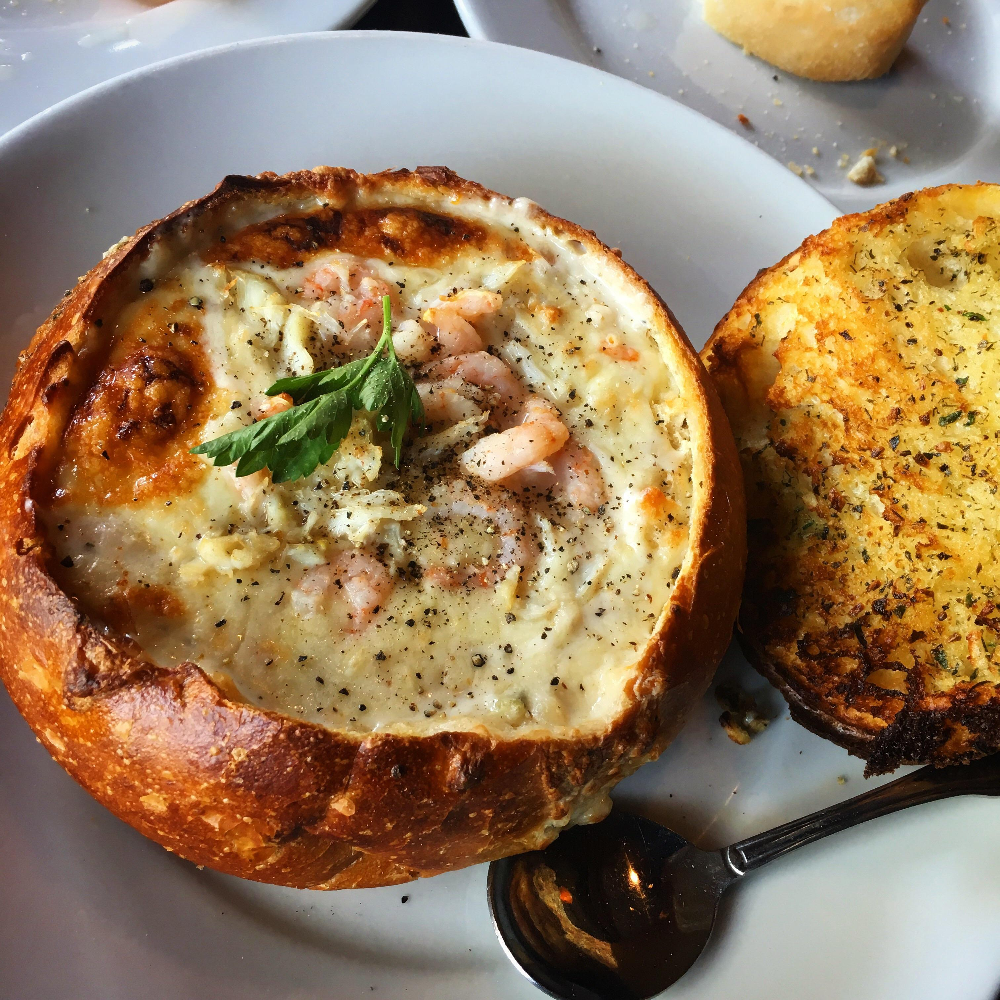

Clam Chowder

Description
This is Oakies version of clam chowder and it's the best clam chowder
recipe I've come across. Don't forget the saltines! Add one more jar of
clam juice, for those of you who like it clammy!
Ingredients
- 6 slices bacon, diced
- 2 stalks celery, diced
- 1 onion, diced
- 1/4 cup butter
- 2 tablespoons all-purpose flour
- 3 (8 ounce) jars clam juice
- 1 quart half-and-half cream
- 4 cups minced clams
- ground white pepper, to taste
Directions
- In a medium skillet over medium heat, cook bacon, celery, and onion
until onion is translucent. Remove from heat and set aside.
- In a large saucepan, melt butter over medium heat. Whisk in flour to
form a roux, cooking until bubbly. Whisk in 1 jar of clam juice,
until smooth. Stir in onion mixture. Pour in half-and-half, stirring
constantly. Stir in clams, reduce heat and simmer 30 minutes.
- Add in bacon, celery, and onion
- Season with pepper and serve